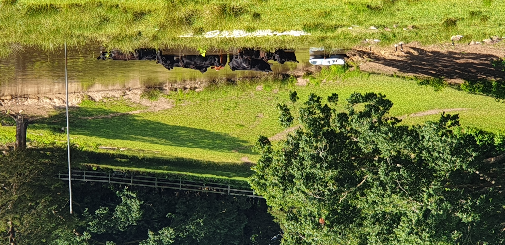
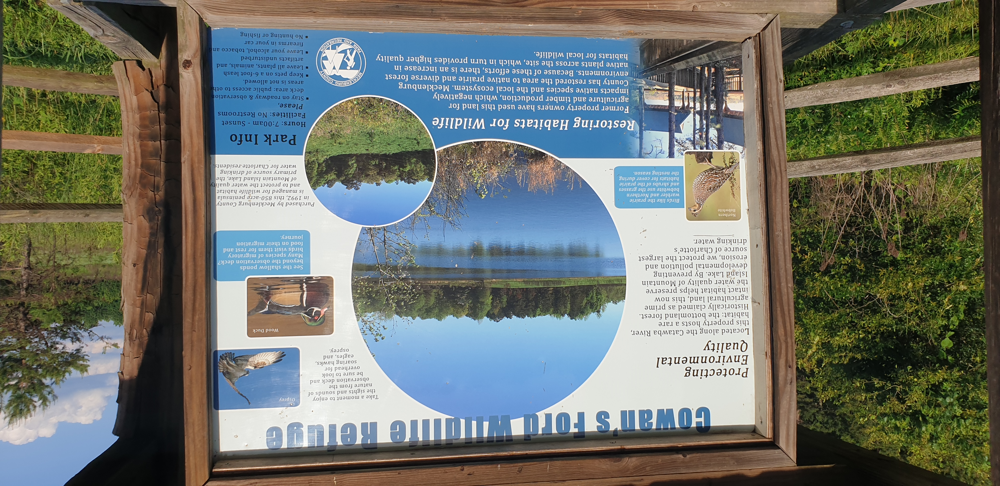
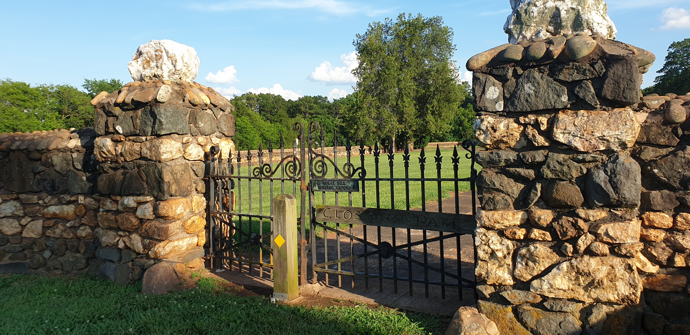
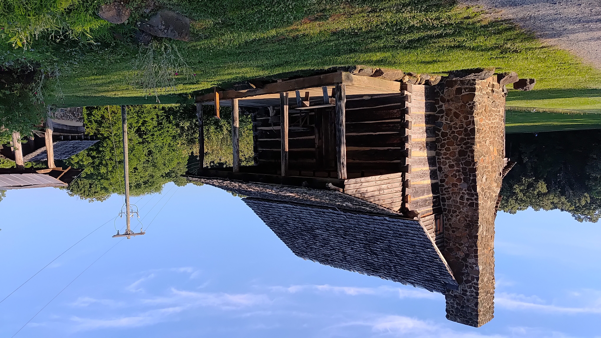
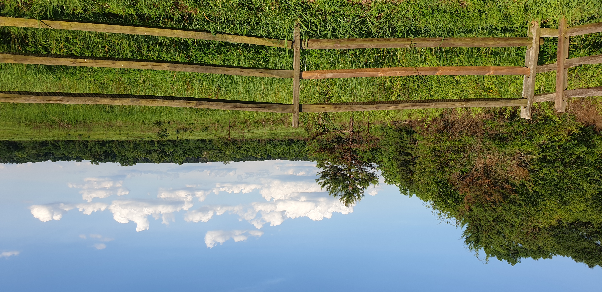

Nature & Wildlife
A Bike Ride at Cowans Ford Wildlife Refuge
A peaceful cycling journey through forests, wetlands, and scenic views along Lake Norman.
Local Walk
Bike Ride
Cowans Ford
Lake Norman
Nature & Wildlife
A peaceful cycling journey through forests, wetlands, and scenic views along Lake Norman.
Watch Video
A short video from Cowans Ford Wildlife Refuge, moving through forest trails, wetlands, and Lake Norman views.
Read the Journey

One of the most unexpected sights of the ride wasn't wildlife at all. A small herd of cattle had wandered into the water to escape the summer heat. It's a reminder that rural landscapes still exist just minutes from the growing suburbs around Charlotte. Places like this reveal a quieter side of North Carolina that many visitors never see.

Cowans Ford Wildlife Refuge protects wetlands, forests, and shoreline habitats along Lake Norman. The refuge was created to preserve wildlife and water quality, but it also offers a peaceful escape for walkers, cyclists, birdwatchers, and anyone looking to slow down for a while.

A short ride from the refuge brought us to Historic Rural Hill. Behind these stone walls lies one of the area's most important historic sites, where generations of early settlers helped shape the region long before Huntersville became part of the Charlotte metropolitan area.

Standing beside this cabin, it's easy to imagine how different daily life once was. Long before air conditioning, paved roads, or smartphones, families built homes from local materials and depended on the land around them. Places like Rural Hill preserve more than buildings—they preserve perspective.

The open fields, forests, and walking trails of Rural Hill create a unique blend of history and nature. This landscape has changed over centuries, yet it still invites visitors to do something timeless: slow down, explore, and notice the world around them.
What began as a simple bike ride turned into a journey through wildlife habitats, rural landscapes, and local history. One of the joys of exploring close to home is discovering how many stories are hidden in places we might otherwise pass by. Sometimes adventure isn't measured in distance—it is measured in curiosity.